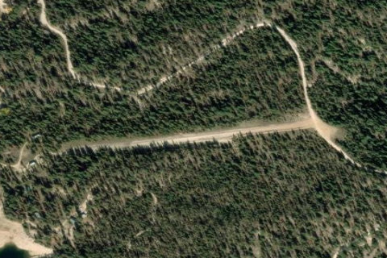

DEADWOOD DAM AIRSTRIP
ID86 · ID

Aerial imagery source: Esri, Vantor, Earthstar Geographics, and the GIS User Community
| Identifier | ID86 |
|---|---|
| State | ID |
| Runway length | 1,800 ft |
| Runway width | 50 ft |
| Surface | DIRT |
| Runway | NE/SW |
| Elevation | 5,489 ft |
| Ownership | public |
| CTAF | 122.9 |
| Coordinates | 44.29777777, -115.64138888 |
Notes
[shortfield] Location Overview The airstrip sits on the southeast shore of Deadwood Reservoir in Valley County, Idaho, roughly 22 miles southeast of Cascade. The field is maintained for government use only by the U.S. Forest Service, and it lies in a remote, mountainous setting accessible primarily by air or low-standard forest roads. The single dirt runway runs northeast to southwest, with the approach coming in over the reservoir to a rather steep uphill landing. Camping & Recreation Parking is available in a flat area across a road at the top end of the strip, and the nearest developed campground is about two miles southwest along the shoreline on the other side of the dam. Other campgrounds in the area, including Cozy Cove, Howers, Barney's, and Riverside, are also within easy reach. A rustic Forest Service cabin near the strip can be rented with advance reservations, and the reservoir itself is popular for fishing, reportedly holding trout, Kokanee, Atlantic salmon, and whitefish. Notes & Warnings This is a demanding backcountry strip meant only for experienced mountain pilots. A high ridge sits at the east end, and the runway has a roughly 6 percent grade sloping down from east to west, requiring one-way landings from west to east and takeoffs from east to west (some sources describe the runway climbing uphill on landing with an 8 percent slope, so pilots should keep power on through touchdown to carry the aircraft to the top). The runway is subject to rutting, with deep channels running along each side. Trees encroach on the lower approach end, cutting into usable length, and pilots should also watch for vehicle traffic on a road that crosses the upper end of the strip. Deep winter snow is not plowed, and only light planes flown by experienced pilots should attempt to use the airport. Many pilots mistake it for an open public backcountry strip because it sits right next to popular public campgrounds and is frequently listed in recreational flight directories. However, unauthorized civilian use is technically restricted due to safety, lack of maintenance, and its primary role in supporting Forest Service operations. Contact the managing agency for clarification or authorization - Lowman Ranger District at (208) 259-3361. History The airstrip dates back to the early 1960s, with FAA records showing an activation date of February 1, 1961, placing it among the older backcountry strips built to serve the Deadwood Dam and Reservoir area of the Boise National Forest. It has long functioned as a U.S. Forest Service airstrip supporting dam operations, fire management, and recreational access to the reservoir, and it remains a well-known destination among Idaho's backcountry flying community, prized as much for its challenge as for its remote, scenic setting.